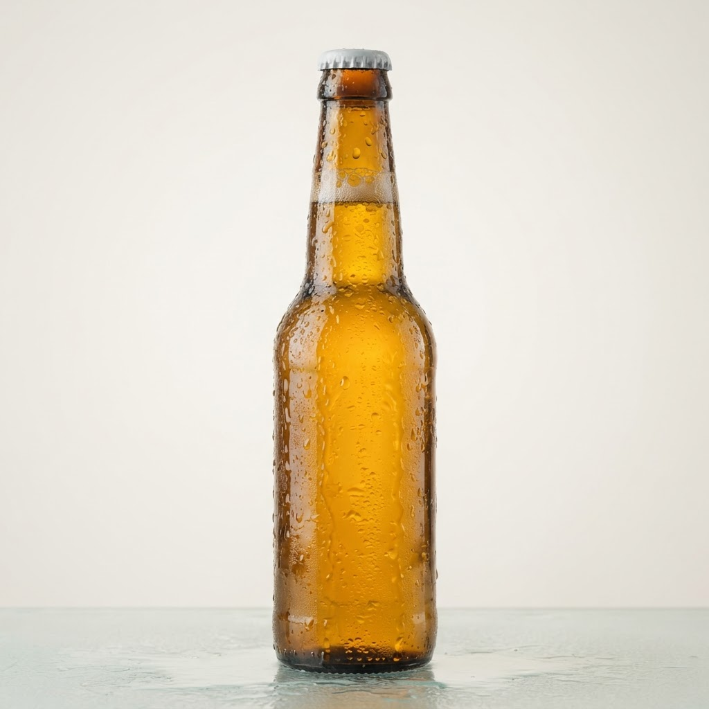
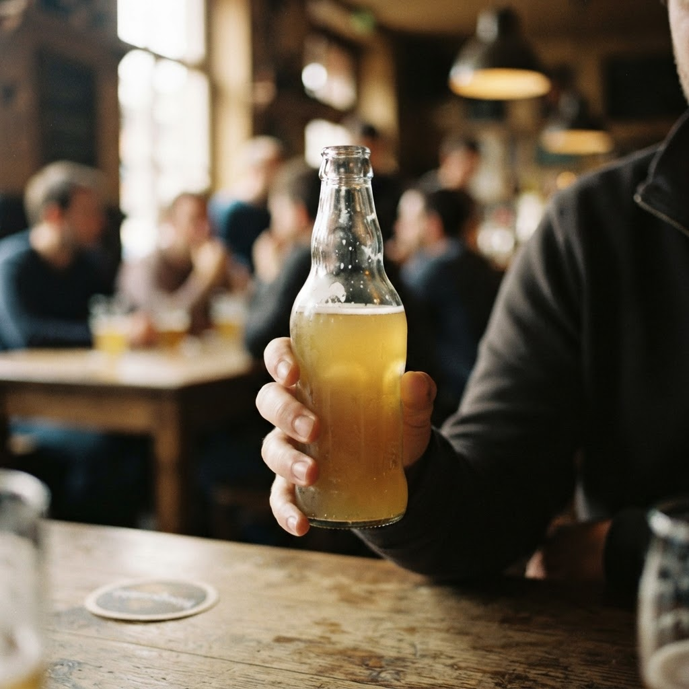

Пиво доставка спб 24 часа с доставкой в Приморском районе

Янино активно развивается, превращаясь из пригорода в полноценную часть агломерации, где спрос на качественный сервис растет ежедневно. Оперативная логистика в ночное время остается критически важным фактором для местных жителей, ценящих комфорт и время.
Почему доставка пива 24 часа СПб с доставкой в Приморском районе не всегда работает
Существует устойчивый миф, что сервис по доставке напитков функционирует в режиме реального времени для всего города без исключений. Многие клиенты полагают, что заявка, оформленная глубокой ночью, будет исполнена так же быстро, как и днем. Однако реальность иная. Логистические плечи до окраин, таких как Янино, требуют серьезного планирования. Часто под заголовком «пиво доставка спб 24 часа с доставкой в Приморском районе» скрываются службы, работающие исключительно в центральных локациях. Когда заказ поступает из удаленного района, сторонние курьеры либо отказываются от выезда, либо существенно увеличивают время ожидания. Мы в «Самойлов и партнеры» подходим к вопросу иначе: наш приоритет — честная логистика. Мы не обещаем мгновенного прибытия, если физически не можем гарантировать его в условиях ночных ограничений. Сравнение показывает: либо вы получаете напитки через час с гарантией качества, либо ждете неопределенное время, сталкиваясь с отменой заказа. Наша специализация — системный подход к ночной доставке за шестьдесят минут, что требует идеальной координации курьеров. Мы не работаем «по всему городу», так как это неизбежно ведет к снижению качества. Вместо маркетинговых уловок о бесконечном охвате, мы обеспечиваем надежный сервис в границах доступности, где за час успеваем выполнить обязательства. Стабильность доставки зависит не от рекламных лозунгов, а от близости склада к потребителю.
Преимущества доставки пива 24 часа СПб с доставкой в Приморском районе
Профессиональный стандарт предполагает работу без сбоев. В отличие от операторов, работающих по принципу «доставим когда-нибудь», наш регламент жестко ограничен временным отрезком в один час. При сравнении этих моделей становится очевидно, что ожидание «круглосуточного» курьера из другого конца города — это риск остаться без заказа вовсе. Мы исключили лишние звенья в цепи поставок. Процесс выстроен так, что курьер покидает точку распределения сразу после подтверждения заявки. Это позволяет нам соблюдать заявленный интервал даже в ночные часы, когда дорожная обстановка кажется спокойной, но требует четкого знания маршрутов. Важно понимать разницу: мы предлагаем сервис, основанный на географической близости, в то время как конкуренты часто эксплуатируют запросы вроде «пиво доставка спб 24 часа с доставкой в Приморском районе» для привлечения трафика, не имея возможности обеспечить обещанную скорость. Наш подход — это отсутствие пустых ожиданий и предсказуемый результат для каждого клиента. Педантичное соблюдение тайминга — единственный способ поддерживать репутацию в сегменте ночных услуг. Мы не гонимся за количеством заказов в ущерб времени доставки. Если мы берем заказ, он будет у вас ровно через час.
Можно ли гарантировать доставку напитков за час в ночное время?
Да, если зона работы курьера строго ограничена. Мы минимизируем логистические риски, работая в конкретных локациях, что позволяет держать слово и привозить заказы точно в срок. Вне этих границ честная работа за час невозможна.
Итог
Итог всегда один: назвать следующий шаг покупателю — оформить заказ и получить его в течение часа в своём районе.
Заказать доставку
Оформите заказ сейчас: привезём за 40-60 минут в любой район Петербурга, круглосуточно.
Призыв
Сколько стоит где купить пиво в спб с доставкой в Приморском районеЯнино активно застраивается, но инфраструктура не всегда успевает за потребностями жителей, особенно в ночное время. Доставка напитков на дом становится един…Сколько стоит водка 5 литров купить спб с доставкой в Приморском районеЯнино активно развивается, и запрос на быструю логистику товаров растет вместе с плотностью населения. Доставка спиртных напитков в ночное время стала логичн…